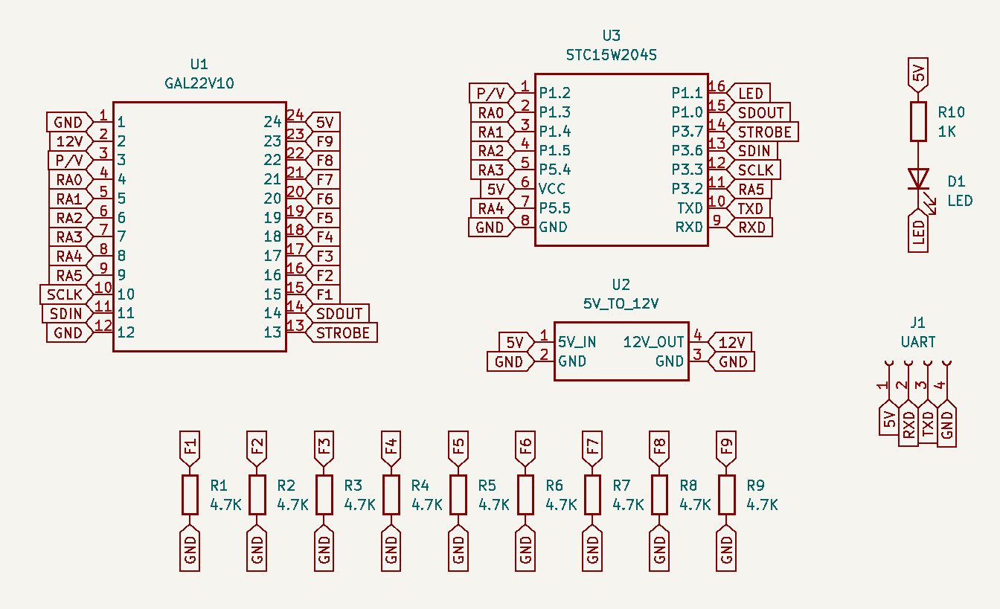
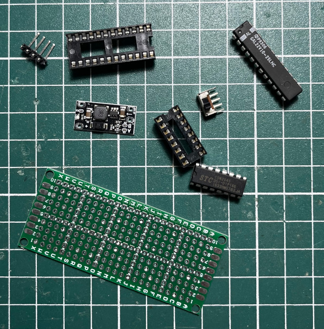
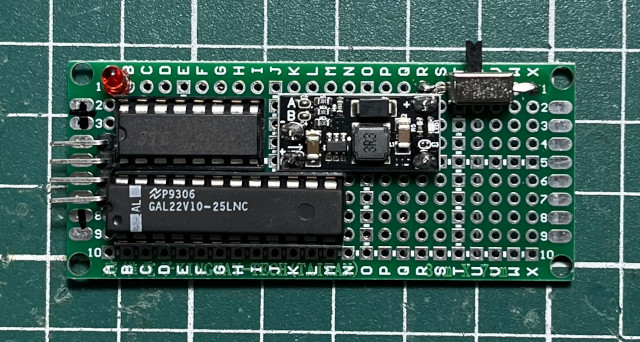
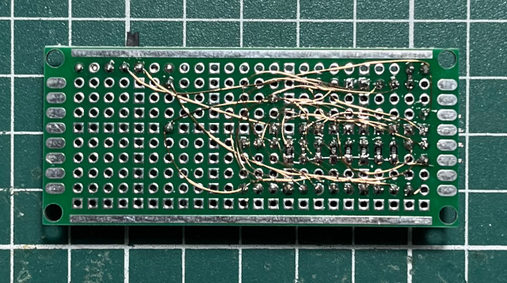
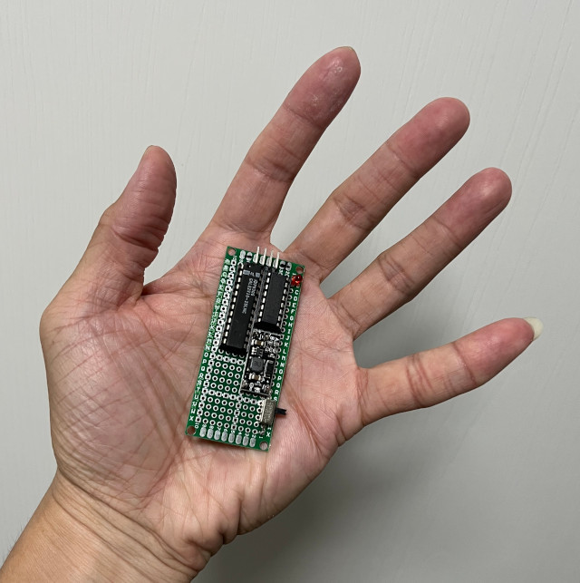

參考資料：
https://github.com/ole00/afterburner
https://bhabbott.net.nz/atfblast.html
https://www.ythiee.com/2021/06/06/galmate-hardware/
https://www.instructables.com/Make-Your-Own-Microchips/
https://www.pcbway.com/project/shareproject/Afterburner_____GAL_chip_programmer_for_Arduino.html
在參考網路上關於GAL22V10 Programmer的資料後，司徒決定做一個超級簡易型的GAL22V10燒錄、開發板，使用的主要晶片則是STC15W204S、GAL22V10，電路圖如下：




